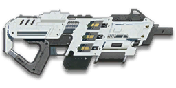

← Back to the PMG-3XB comparison
Sage Guide · Nanite Systems Operatives · Submachine Gun
The 1,000-cert NSO burst submachine gun — three-round bursts, the fastest bullets of any SMG, and a first shot with no extra kick. Usable by every class except MAX; this page teaches you to win fights with it today.
Read this first — this gun is NOT a starter. The PMG-3XB costs 1,000 certs (or 699 Daybreak Cash) and is unlocked through purchase. Nanite Systems Operatives get no SMG for free — the PMG-100 and PMG-200 are its sister guns in the PMG family, and the 3XB is the burst-fire one: same family, tighter groups, longer reach.
The one-line verdict: The SMG that thinks it's a carbine: 150 damage up close, 475 m/s bullets, and bursts that stay tight to 40 m. The price is the pause between bursts — about 643 RPM sustained — and a 30-round magazine. Fight at 8–25 metres, hold two pulls at a time, and it will carry you.

The PMG-3XB · Nanite Systems Operatives · 1,000 certs · 30-round magazine
Picture the scene, because you've probably lived it: you're sprinting across a courtyard, an enemy appears, and you do everything at once — hold the trigger down while you're still running, then press aim-down-sights (ADS) a split-second later, finger still down. The sight picture snaps in, it looks precise… and your bullets spray everywhere except the man in your crosshair. He kills you. It feels like the game cheated. It didn't — here's what actually happened.
Four beats, left to right — the same mistake the cards above describe, drawn out.
1 · SprintingYour cone starts maxed at 7.0° — the widest it can ever be.
2 · Trigger heldFiring from the hip while running — every shot adds bloom.
3 · ADS, mid-holdThe sight looks precise — but aiming down sights does not reset bloom.
4 · The sprayBullets fly out of the wide cone you built. The enemy walks away.
Same fight, done right. Each beat has a job, and the order is the whole lesson.
1 · StopLet go of sprint (and the trigger). About 0.3 s for the gun to settle.
2 · AimPress ADS and let the sight come up (~0.15 s).
3 · FireNow fire — from the aimed cone. First shots land where the dot points.
The exception — under ~8 m, skip the whole danceHipfire works, no ADS needed, and stopping is optional. Keep moving, strafe, and let the hipfire ring do the work.
You started firing from a sprint, from the hip. Sprinting is the least accurate state in the game: your cone of fire starts at 7.0° — fully bloomed, the widest it can ever be. Every shot you fire from the hip widens it further still (+0.05° per shot).
Then you pressed ADS mid-hold — and nothing reset. Aiming down sights does not shrink a cone of fire that is already bloomed. The scope only gives you a precise picture; the bullets keep flying out of the wide cone you built while running and hipfiring. That's the whole mystery: accurate-looking aim, wildly inaccurate gun.
Two timers stack the deck further: your gun needs about 0.3 s to settle after a sprint, and raising the sight itself takes ~0.15 s. Trigger held through all of it means your first half-second of fire is pure confetti.
1 · Feet. Let go of sprint (and the trigger, if you're already holding it). Stop, or drop into a strafe — anything but a full sprint.
2 · Sight. Press ADS and let the sight come up. This takes a heartbeat — that's fine, a quarter-second of patience is cheaper than a magazine of misses.
3 · Trigger. Now fire. Starting from the aimed cone of 0.30°, your first shots land where the dot points, and you control the bloom from zero instead of inheriting a maxed-out cone.
Stop → aim → fire. If you take one habit from this entire page, take this one. You'll practise exactly this rhythm in the simulator in section 04.
Every enemy infantry has 1,000 health (500 shield + 500 health). Your bullet does 150 damage up close, fading to 100 at long range. Headshots count double, leg shots count less (×0.9). That gives you three numbers worth memorising:
| Range | Damage | Head | Chest | Legs | Chest vs shielded Heavy |
|---|---|---|---|---|---|
| Close · 0–8 m | 150 | 4 | 7 | 8 | 10 |
| Mid · 9–24 m | 150→125 | 4 | 8 | 9 | 12 |
| Far · 25–40 m+ | 125→100 | 5 | 10 | 12 | 15 |
Perfect-accuracy times to kill, counted on the burst clock: 4 headshots ≈ 0.28 s, 7 chest shots ≈ 0.56 s up close. In real fights you'll land maybe half your rounds — still, this is why the head matters so much on this gun. The breakpoints are exact: 7 chest shots to about 13 m, 8 to 24 m, 9 to about 33 m, 10 past that.
Full power to 8 m, then a steady slide to minimum at 40 m. The gold line shows Soft Point Ammunition, which stretches full power to 13 m. Past 24 m the kill costs 9 chest shots or more.
One gun, four fighting styles. The right technique changes with distance — use the range finder below to see what your bullets do at any range, then learn the four bands underneath it.
How to fight hereAim down sights at the upper chest and neck. Hold two pulls — 6 rounds — then release; your recoil climbs into the head for free damage.
Aim: centre of the chest, from the hip. Keep moving.
Scoping in costs you time and drops your speed to 0.75× — at arm's length that gets you killed. SMGs have the tightest hipfire of any weapon class. Strafe side to side (A/D) while firing so you're hard to track. One pull is 3 rounds, so a short hold is all you need.
Aim: neck / upper chest. Holds of 6 rounds (two pulls).
This is where the gun earns its keep: full 150 damage to 8 m, still 134 at 18 m, the fastest bullets of any SMG, fast handling. Start your crosshair at the neck — the natural upward climb walks your shots into the head, and 4 head hits end the fight in 0.28 s. Strafe while scoped; at 0.75× you move faster aimed than a scoped Heavy, and a moving target still beats a still one.
Aim: chest. One 3-round burst, pause between pulls.
Damage is sliding from ~130 toward 100 and your cone of fire blooms if you hold the trigger. Fire a burst, release for a split second to let accuracy reset, fire again. The recoil drifts up and to the right (17–20° angle), so pull your mouse gently down and to the left. Crouch or stand still when you can — both tighten your shots.
Aim: chest. Single bursts of 3 at exposed targets only.
At 100 damage you need 10 chest hits — a long, loud advertisement of your position. Take these shots at stationary or fleeing targets, medics reviving, and engineers on turrets. Otherwise, your better play is to close the distance behind cover. Knowing when not to shoot is a skill too.
Your accuracy is decided by two things before skill even enters it: what your body is doing (your stance sets the starting cone of fire) and what your finger is doing (holding the trigger grows that cone with every shot). The PMG-3XB has no fire-mode switch — 3-round burst only — so "firing modes" are something you do with your finger, not a setting on the gun. One trigger pull is always a whole burst: you cannot fire a single bullet.
| Stance | Starting cone | What it means for you |
|---|---|---|
| Sprinting | 7.0° | Maxed out — the widest the cone can be. This is the section 01 disaster: never start firing from a sprint. |
| Hipfire, moving | 1.5° | Walking or strafing from the hip. Fine inside ~8 m, leaks rounds past the target beyond it. |
| Hipfire, standing | 1.0° | Your point-blank default. The 0.14 m ring at 8 m in section 05 is this stance drawn out. |
| Hipfire, crouched | 1.0° | The tightest hipfire you have (1.25° if you crouch-walk). Crouch when holding a doorway from the hip. |
| Aimed (ADS), feet planted | 0.30° | Standing or crouched makes no difference here — about three times tighter than hipfire. This is why section 01's order matters. |
| Aimed (ADS), strafing | 0.30° | The moving floor — the same as standing still, so strafing costs you nothing in cone size on this gun. You still move at 0.75× while scoped, faster than most guns' 0.5×. Strafe between bursts to stay hard to hit; plant your feet during each burst. |
| Mode | How your finger does it | Use it at |
|---|---|---|
| The mag dump | Hold the trigger and don't let go — the gun keeps firing 3-round bursts | Point blank only, or suppressing a doorway. Bloom maxes out fast — past ~8 rounds you're spraying, not aiming, and a 30-round mag is gone in 2.7 seconds. |
| Two pulls — the default | Hold for 6 rounds (two trigger pulls), release ~0.15 s, hold again. 5 rounds is the ideal, 6–8 is fine while you're learning | Almost everything, 8–40 m. Each release resets the cone, so every hold starts at 0.30°. |
| One burst — tap-fire | A single trigger pull — 3 rounds — with a real pause between | 40 m and out, at exposed or stationary targets. Slow, but every round goes where the dot is. |
One more thing worth knowing: one trigger pull is a 3-round burst — shots 70 ms apart inside the burst, 140 ms between bursts — so a held trigger delivers 3 rounds every 280 ms, about 643 RPM sustained, even though the stat card says 857 RPM. The cone still grows 0.05° with every shot, so there are no free shots with no cone growth on this gun. And the first shot of each burst kicks nothing extra — the first-shot recoil multiplier is 0×, so every burst starts as clean as the last one ended.
A target 30 m away, aiming down sights. Press and hold FIRE (mouse, touch, or hold Space with the button focused) and watch the holes walk wider the longer you hold — that's firing from an ever-growing cone. Release, let the cone reset, fire again. Aim for holds of 5 rounds; 6–8 is tolerable while you're new. On this gun a hold of 6 is exactly two trigger pulls — the natural rhythm. This practice window is shared by the whole Sage series: it's driven by a weapon profile plugged into the window — here the PMG-3XB's (857 RPM inside a burst, 0.30° starting cone, 0.05° bloom per shot, target at 30 m) — and the spread is drawn at true scale from those numbers. Holding the trigger fires 3-round bursts: three shots 70 ms apart, a 140 ms pause, then the next burst.
Cone of fire — fills as you hold, empties when you release.
Your bursts will be graded here — green at 5 rounds, tolerable up to 8.
Numbers are abstract. These three pictures are the same numbers drawn to scale, so you can feel them before you queue up.
A full-size target 8 m away — an arm's-length room fight. The rings show where hipfire rounds land around your aim point (the chest). Sizes are drawn to scale from the gun's real cone-of-fire numbers.
Read it this way: standing still, the 0.14 m ring fits well inside the chest — most rounds hit a target this size, which is why hipfire works point-blank on this gun. Move and it grows to 0.21 m — still inside the torso — so even strafing hipfire stays on him at arm's length. The rings only grow with distance while the man doesn't, so past ~10 m they start leaking past him: the exact moment to switch to aiming down sights, where the spread shrinks to a dot. (Ring sizes use the real geometry: spread diameter = 2 × distance × tan(cone ÷ 2).)
The middle ring is your standing hipfire cone — the tightest practical hipfire stance for this gun. Crouched is the same 1.0°; crouch-walking is 1.25°. Your sights are 0.30° when planted, so the aimed cone is tighter still — and while you strafe it's the same 0.30°.
Every shot widens your cone of fire ("bloom"). Releasing the trigger for a heartbeat resets it. Same 18 rounds, two very different outcomes:
The target pattern is bursts of about 5 rounds — that's the ideal. Bursts of 6–8 are fine while you're new (call it newbie tolerance). Past that, the bloom (0.05° per shot aimed, 0.05° from the hip) keeps growing with every shot, so the extra bullets mostly decorate the wall behind your enemy instead of hitting him. Short bursts also leave you rounds for the second enemy — remember, the magazine is only 25.
Three bursts, 3 rounds each. Three bursts is 9 rounds — the same 9 rounds that, if they hit, end a fight at any range this gun is meant for.
Both cost 30 certs, both are worth it. Your default iron sights are fine, but a clean dot makes it easier to hold that neck aim in the 8–20 m band. The 1× ABLE dot is the safest first buy; the 2× ABLE is for the 20–40 m band and is a second buy, not a first. There is no 3.4× that helps here — it only magnifies the wobble.
No zoom. The target at 25 m is small but the view is wide open — you see the crate, the tower, and the next enemy coming. Fast to aim, nothing blocks your edges. Best inside ~25 m.
Same target, same 25 m — but he looks twice as tall, so placing shots on his chest and head gets much easier. The price: your view narrows to the round window, the crate and tower are gone, and close targets feel fast and huge. Best at 15–40 m.
That's the whole 30-cert decision. Everything else on the gun costs more and matters less.
Every attachment has a real price and a real effect on this gun's numbers — nothing here is cosmetic. The certs below are per attachment; the costs are the same for every NSO character, and they stay with the gun once bought.
Notable gaps: there is no compensator, no flash suppressor, no heavy barrel and no short barrel for this gun — the Suppressor is the only barrel attachment, and no barrel attachment changes your vertical recoil, which is already low. If you want tighter bursts, that's the Forward Grip's job.
Four complete builds, each with a job, a cert total, and a reason. The totals include the gun itself (1,000 certs) plus the attachments listed — so a "130-cert build" means 1,130 certs all in.
The gun as it comes. Learn the burst rhythm before spending anything.
Why: the stock gun is already strong — 150 damage, the fastest SMG bullets, no first-shot kick. If you're not winning fights with it stock, an attachment won't fix that; the burst rhythm in section 04 will.
The default recommendation for most players.
Why: a clean 1× dot, tamed horizontal recoil, and the 150-damage band stretched to 13 m — the whole sweet spot. This is the build the rest of the guide assumes.
For holding a doorway, a cap point, a staircase.
Why: hipfire is your weapon inside 8 m, and the laser shrinks your hipfire ring by a third. You pre-aim the doorway, strafe in, and hold. The trade: your bursts past 20 m walk wider without the grip.
For flanking — the infiltrator's and light assault's build.
Why: no minimap dot, no muzzle flash, and the grip keeps your bursts on target while your bullets fly at 404 m/s. You trade raw reach for invisibility — pick your fights, and never take the same flank twice.
Gear gets you to the fight. Habits win it. Six, in the order to learn them.
Know these before your enemies teach them to you.
Do these in VR Training against the dummies, then take them live. Ten minutes total.
PMG-3XB · 1,000 certs · fight at 8–25 m · aim neck, hold 6 (two pulls), release, repeat · 857 RPM inside the burst, ~643 sustained · reload early behind cover (1.65 s) · buy the 1x (30) + Forward Grip (100) · hipfire under 8 m · past 40 m, tap or close in.